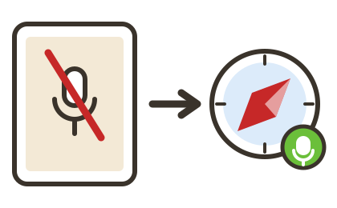

Eltern
Instrument
Die Noten bleiben bei allen vier gleich, und die Griffe auch: notiert d1 ist überall 1 + 3. Unterschiedlich ist nur, wie tief es klingt — danach richtet sich, was die App vorspielt und was sie durchs Mikrofon erwartet. Das Griffbild zeigt Drehventile beim Horn und Druckventile bei Trompete und Tenorhorn. Das Tenorhorn wird wie eine Trompete in B notiert und gegriffen, klingt aber eine Oktave tiefer. Nach dem Umschalten startet die App neu; der Fortschritt bleibt erhalten.
Trefferquoten
Tonumfang
Jeder Ton lässt sich einzeln an- und abschalten. Solange hier von Hand gewählt ist, schaltet die App keine Töne mehr selbst dazu.
Wie streng zuhören?
Das entscheidet, wann ein grünes Häkchen kommt: wie genau der Ton getroffen sein muss, wie sauber er stehen soll und wie weit er neben dem Schlag liegen darf. Super leicht ist die Voreinstellung — am Anfang zählt, dass überhaupt etwas gelingt. Wenn die Häkchen zu leicht kommen, eine Stufe weiter. Mittel entspricht dem, was ein geübtes Kind trifft.
Notenbild
Bunt hilft am Anfang: Notenkopf, Griffbild und Tier haben dieselbe Farbe. Schwarz zeigt Noten und Griffbilder so, wie sie in jedem anderen Notenheft gedruckt sind — für den Übergang zum normalen Notenlesen.
Im Buch
In den Liedern aus dem Buch stehen die Noten von Haus aus schwarz — so, wie sie auf der gedruckten Seite neben dem iPad stehen.
Mikrofon
Fortschritt
Herkunft der Aufnahmen
Die Töne, die die App vorspielt, sind echte Aufnahmen einer Yamaha-Périnet-Trompete, gespielt von Mario Schulter. Aus sieben Aufnahmen je Ton wurde die sauberste ausgewählt und auf gleiche Lautstärke gebracht.
Warum klingt es tiefer, als es steht?
Die Trompete ist ein B-Instrument: Was als c notiert ist, klingt als B — eine ganze Stufe tiefer. Die App spielt genau in dieser klingenden Höhe vor und hört auch in ihr zu. Ihr Kind kann also mitspielen, ohne dass irgendetwas umgerechnet werden muss. Neben einem Klavier klingt es eine Stufe tiefer als dort dieselbe Note — das ist richtig so und gilt für jede Trompete.
